Simple and Easy Recipes
Posts on 'maincourse'

Nonveg Recipe
Jan 12, 2020
Chicken Bharta with Butter naan is an unbeatable combo. Fragrant and creamy this gravy will always make your meal special. From younger to elder Chicken Bharta is loved by all. This is not my first post on Chicken Bharta, there is another delicious recipe of it which I made few months back. You can try that too, click the name to see that recipe kolkata style chicken bharta One day while cooking B ...

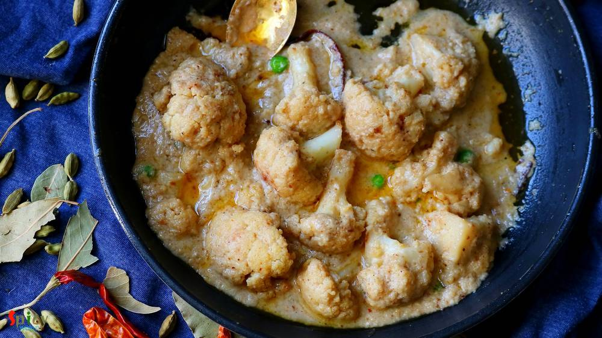
Veg Recipe
Nov 19, 2019
Fulkopi menas Cauliflower in Bengali language. Fulkopir Rezala is a delicious veg mughlai delicacy. Like any other non veg rezala gravy this vegetarian version also tastes delicious. Cauliflower florets will be cooked in a white gravy which consists of onion, ginger, garlic, yogurt, poppy seed and nut paste. Fulkopir rezala goes best with plain rice, roti, naan or pulao. Do give this recipe a try ...

Nonveg Recipe
Sep 5, 2019
Sorshe bata (mustard paste) diye Mach (fish) is a staple for Bengali. I truly love every form of bengali fish curry from Jhol to Kaliya with some steamed rice. My mom makes this Sorshe bata diye Mach very often but I have never tried it with onion, ginger and garlic. One day I came across this Sorshe Salmon recipe of Somedutta's (my friday food swings) and it caught my attention. I gave it a try, ...

Nonveg Recipe
Jun 19, 2019
Most of the Punjabi curries call for three important ingredients - freshly ground Garam Masala powder, Kasuri methi (dry fenugreek leaves) and Ghee (clarified butter). These ingredients make their curries very flavorful and tasty. Rest of the process is simple, marinated mutton will be cooked in onion tomato gravy. This punjabi mutton curry goes best with plain chapati (Indian flatbread) or rice. ...

Nonveg Recipe
Jan 27, 2020
Bhapa means steamed. There are so many fish curry recipes in Bengali cuisine which calls for 'mustard' / sorshe, this particular item is a jewel. Fresh flavor of mustard oil and green chilies goes so well with shrimp. With some steamed rice this 'sorshe chingri bhapa' tastes best. You can make this with fish fillet or paneer also. If you are a shrimp lover and also don't know about this dish, then ...

Nonveg Recipe
Sep 24, 2015
Yesterday morning during surfing net I saw an eyecatching picture of Chicken Dak Bunglow curry. It made me doing immediate preparation for dinner.Trust me, after dinner there was literally nothing in our plate except bones:-) It became so damn tasty ! I once ate the mutton version of this curry. That was also finger licking delicious, will upload that soon. Do give this recipe a try and I am sure ...

Nonveg Recipe
Feb 26, 2019
Dalna means a curry which contains potato with other vegetables or protein. But potato is a must for Dalna. Some also call it Torkari. Summer is coming and so is sweaty tiredness with it. If you don't want to spend long time in the kitchen, no worries! I have a solution. Dimer Dalna or Egg and Potato Curry is the most simple and easy recipe which can easily feed a crowd. Anyone can enjoy a good, t ...

Nonveg Recipe
Feb 14, 2019
Mutton korma is an old school and popular non veg main course item from Old Delhi. Any korma recipe has onion and yogurt based sauce, some even add nut paste also. Last weekend I had a party in my house. Among all the foods, the main attraction was Mutton Korma. Korma is very rich itself. Always serve this with light rice item or naan. Do give it a try and let me know how it turned out for you.

Veg Recipe
Feb 10, 2019
Niramish means without onion and garlic. Usually when we offer a meal to god / goddess with our respect and devotion, we call it 'Bhog' / 'prasad' . In any prasad, this Aloor Dom is a must with khichdi and chutney. This recipe is without onion and garlic, that's why I mentioned 'niramish'. During monsoon you can also enjoy this with khichuri, beguni and chutney or in weekend breakfast make some lu ...

Nonveg Recipe
May 23, 2020
One of my favorite weekday meal is 'Chicken Pulao' aka Murg Pulao, because it is a one pot meal and takes very little time to cook. This wholesome dish is super tasty and goes best with raita or any type of curry. To make the pulao more healthy you can add add veggies like potatoes, carrots, beans etc. Along with that cashews and raisins can also be added. This is a very good lunch box option for ...

Nonveg Recipe
Jan 4, 2019
Dahi chicken is a very simple yet delicious chicken curry which goes best with roti or plain chapati. Dahi or Doi means plain full fat yogurt. This dahi wala murgh has a delicious thick white colored yogurt and onion based gravy. Well, I prefer white colored doi chicken, if you like colorful then add some turmeric powder and red chili powder, rest of the recipe will remain same. You will get very ...

Veg Recipe
Dec 17, 2018
This palak paneer recipe is the best for weeknight dinner. Usually while making palak paneer, we need several kind of paste like onion paste, tomato puree, spinach paste, ginger garlic paste ... time consuming ! In this recipe everything will be stir fried in little amount of oil then we will make just one paste out of them. Creamy, tasty and buttery palak paneer will be ready in a jiffy ! Do give ...

Nonveg Recipe
Sep 13, 2019
One of the most famous dish from Mughlai cuisine is 'Chicken Chaap' and the taste is unbeatable. You will find the actual taste and flavor in few popular restaurants in Kolkata. After researching for a long time about the authentic recipe of Chicken chaap, here is the way how I made it. This recipe will give you the exact flavor of restaurant style Chaap. This dish should not be eaten as regular m ...

Nonveg Recipe
Dec 19, 2018
Mutton Handi is a delicious goat meat curry which has a scrumptious gravy and goes best with plain chapati, butter naan or pulao. Handi means clay pot. Usually mutton handi is cooked in clay pots, that's where the name came from. But I didn't have one, so cooked in my regular vessel. The taste was out of the world, soft pieces of slow cooked mutton literally stole my heart. If you are a mutton lov ...

Nonveg Recipe
Dec 6, 2018
Chicken Changezi has a rich, chatpata (spicy and tangy) and very delicious gravy which goes best with plain flatbread or naan. Changezi Chicken is a popular dish in Delhi. Almost every non veg restaurants and dhabas sell this dish. In this recipe lightly fried chicken will be cooked in a brown onion and nut based gravy and to make it chatpata, we will add chaat masala, lemon juice, green chilies a ...

Nonveg Recipe
Nov 29, 2018
Tandoori Prawn Pulao is a delicious, spicy seafood rice pilaf dish in which Prawns will be marinated with yogurt, tandoori spices and other ingredients then will be tossed with long grain Basmati rice ... so so good! You can have this Prawn Pulao as it is or any kind of gravy on the side will work just fine. The recipe is simple and take very less time to cook. Try this in your kitchen and let me ...

Veg Recipe
Nov 19, 2018
Aloor Dom is a very good old Bengali recipe which can never go wrong with anything. You can serve this Bengali style dry Potato curry with Luchi / Porota / Kochuri / Pulao / Fried rice and what not. It tastes heavenly. I made Lachha Parathas to go with it. The recipe of Aloor dom is very easy in which potatoes will be cooked in onion tomato based gravy along with a special ground masala and yes, t ...

Nonveg Recipe
Nov 13, 2018
In India many dhabas and restaurants sell Keema Masala which is minced mutton curry. Keema means mince. This is a delicious non veg gravy which goes best with plain chapati or naan. In Keema Masala, minced mutton will be cooked in a onion tomato based sauce along with some flavorful spices and lots of fresh green chilies and coriander leaves. Try this recipe in your kitchen and enjoy a wonderful d ...

Nonveg Recipe
Nov 7, 2018
One of my favorite indo-chinese dish is 'Chili Fish' - which is very similar to Chili Chicken. In this recipe, deep fried fish nuggets will be cooked in a hot and spicy sauce with onions and peppers... so, so delicious ! You can get them in many Chinese restaurants in Kolkata. It tastes heavenly with fried rice or noodles and it is very easy to make. Try this recipe in your kitchen and enjoy with ...

Nonveg Recipe
Oct 31, 2018
Egg Malai Curry is a Bengali delicacy, in which hard boiled eggs are cooked in a creamy milk based sauce. Dimer Malaikari is a very rich and mild curry which goes best with plain steamed rice or ruti. This is a kid friendly recipe, adjust the heat level according to their taste. They will enjoy this preparation to the core, I can vouch for that. If your family love egg, then you have to give this ...

Nonveg Recipe
Oct 29, 2018
Pudina Chicken has a delicious yogurt and mint based gravy which goes best with plain roti or Indian flatbread. Mint leaves / Pudina patta has it's very own unique taste and flavor, which is why you can only use them in those dishes where it fits properly. Not every chicken curry tastes good with mint but this one is my family favorite. Pudina Chicken is very simple recipe with loads of fresh flav ...

Nonveg Recipe
Oct 21, 2018
Rajasthan is a state of India which is situated at the western part. In childhood I went there with my family on vacation, though I remember nothing much except our album photos. Rajasthan is the land of kings and 'laal maas', which is hot and spicy red colored mutton curry, is their well known dish. The dish is everything about color and flavors. They cook the mutton in a yogurt and onion based s ...

Veg Recipe
Oct 2, 2018
Paneer Butter Masala has a thick, creamy nut, onion and tomato based sauce with some juicy and lightly fried paneer pieces, also the rich gravy has an aromatic flavor of butter and kasuri methi (dry fenugreek leaves). Those who had 'dhaba' (street side food joints of India) food once in their life knows that no restaurant can replicate their rustic yet delicious taste. Dhaba style paneer butter ma ...

Nonveg Recipe
Oct 2, 2018
Mutton Kosha is a Bengali delicacy which can be served with plain rice / basonti pulao / luchi. Mutton kosha requires patience, kosha means slow cooking in oil and spices. Off course to hurry up the process you can use pressure cooker, but slow cooking is recommended and this mutton curry like any other curry tastes better on next day. We have one more variance of the Mutton Curry called Kosha Man ...

Nonveg Recipe
Sep 21, 2018
Kolkata style Chicken Dum Biriyani is one of the tastiest variety of biriyani recipe, which has awesome flavors and juicy chicken pieces. You can have it as it is or with Chicken Chaap / Korma / Kosha. I also have other Biriyani recipes in my blog. Cooking Biriyani is time consuming, also the more you practice the more you will get better at this. The process is lengthy but with few tricks and tip ...
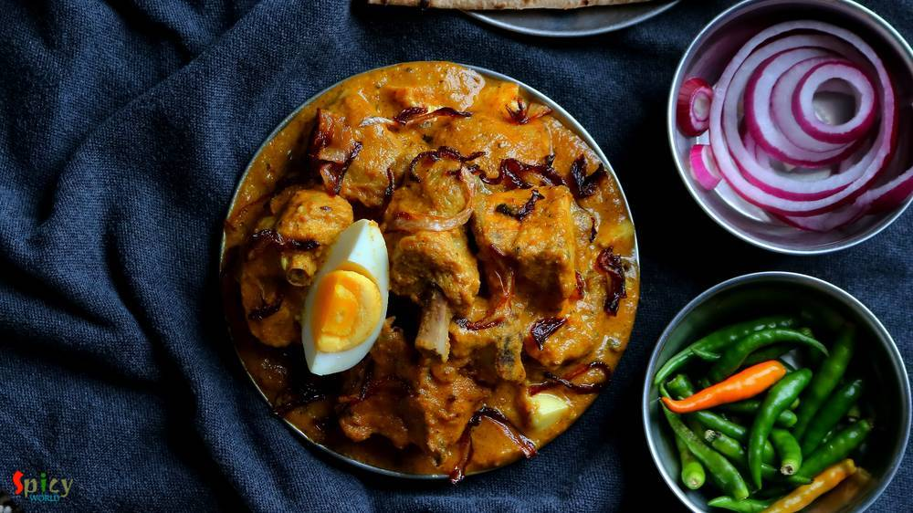
Nonveg Recipe
Sep 13, 2018
Mughlai chicken curry is a thick, nut based gravy dish from the Mughlai (awadhi) cuisine. The sauce of this Mughlai Chicken curry is very rich so you can serve this with naan, roti or light pulao. In this recipe first marinated chicken will be fried then cooked in onion, tomato gravy with lots of other flavorful ingredients. Last Saturday my family enjoyed it thoroughly, now its time for you to en ...
 Pulao / বাসন্তী পোলাও / Holud Pulao / Mishti Pulao")
Veg Recipe
Aug 10, 2018
This is a traditional bengali dish. 'Basanti' means yellow colour. You can also call this Sweet (mishti) Pulao. My mom make this in many gatherings along with Macher Kalia or Mutton Kosha. I have literally no words about the combination. This is the must combination 'he' wants on his birthday. But once we had this with Chicken Dopyaza (already on blog) and that combo was also so good! Give it a tr ...

Nonveg Recipe
Aug 25, 2016
We all love to eat food from Dhaba (road side food joint) while traveling. Nowadays you can find many fake dhabas and taste of their food is also fake, nowhere close to the authentic ones. Luckily few old and original dhabas in India still sells the best meals. After tasting those foods, you will probably think that their cooks must have some kind of magical hands. I once tasted their 'mutton curr ...

Nonveg Recipe
Jun 29, 2016
Our common friend Subhodip visited our house last weekend for a dinner. He is a real foodie and have a very good knowledge about food and restaurants. So, I wanted to make something new on chicken for him and also for my blog. I have already posted 'mutton dopyaza' recipe, then I thought this time why not with chicken? Confirmed the idea with my hubby and 'chicken dopyaza' got selected for main-co ...
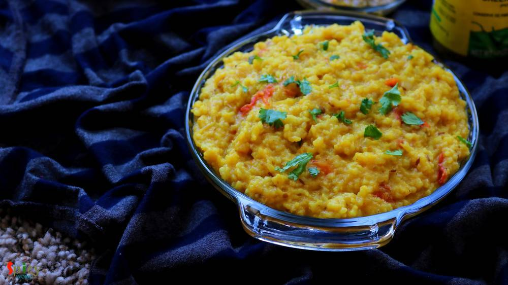
Veg Recipe
Jun 4, 2016
'Khichuri' is a seasonal one-pot-meal. We generally enjoy it in monsoon or winter. The easiest dish of rice category is 'khichdi'. From bachelor to elder, everybody knows how to make it. But this is a tastiest variation of khichdi. 'Achar' means pickle, I used mango pickle here. The process is very simple, no need to fry or cook anything separately, everything will be cooked in one pot and one tim ...
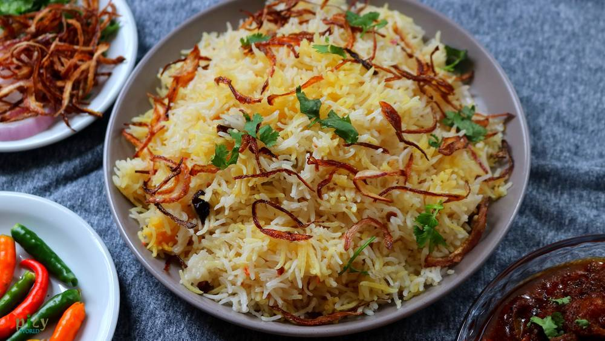
Veg Recipe
Jul 16, 2018
Zafran which is Saffron is a very expensive and subtle spice. This pulao recipe requires lots of it as we are not using any other overpowering spices. It is a very easy recipe (best to feed a crowd) and goes very well with any type of gravy. Try this pulao in your kitchen and let me know how it turned out for you.
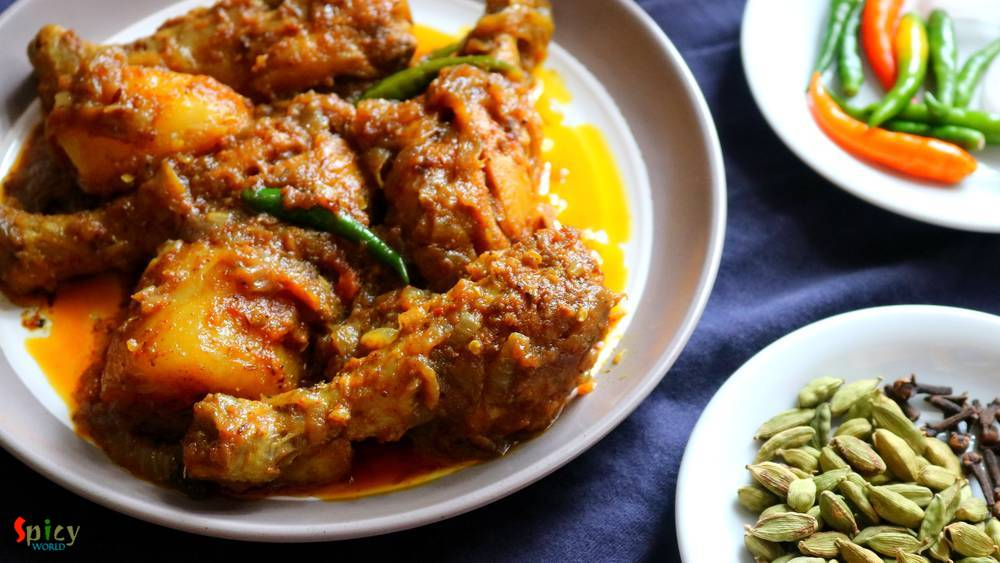
Nonveg Recipe
Jul 5, 2018
In Bengal, one of the common non-veg curry is 'chicken kosha'. I think everybody is familiar with this name. Kosha / Bhuna is a process where you have to cook the meat with spices on medium - low flame in its own juices, if it gets dry then only add water as less as possible. It requires time but with chicken you can make it within an hour. One can make the same curry with mutton, potato, egg etc. ...

Nonveg Recipe
May 18, 2018
I have someone in my house who often demands to eat 'homemade-restaurant style' dinner in weekend ???. That's why last Sunday I had to make 'butter chicken' along with 'butter naan'. Nowadays 'butter chicken' is famous in all over the world. In Indian restaurants this is the mostly ordered dish. It has a tomato based, rich, velvety gravy and grilled, juicy chicken pieces. The combination was a tot ...
")
Nonveg Recipe
Mar 14, 2019
Chicken Bharta was prepared last weekend in our lunch. The recipe is Punjabi inspired Bengali dish. A very tasty shredded (pulled) chicken preparation which is famous throughout India. It has onion and tomato based gravy with beautiful flavor of kasuri methi and Garam masala. Of course, how can I forget about the Boiled Egg? To make an excellent Chicken Bharta you have to finish it off with boiled ...
 / Yogurt Pepper Chicken")
Nonveg Recipe
Apr 24, 2018
"Lajawab" is the only compliment about mom's recipe. My mom make this dish in a very easy and simple way. But it tastes delicious. You will need very few ingredients for this dish. This the best recipe for teenagers because its very easy to make.

Nonveg Recipe
Jul 2, 2019
We always have a grand feeling whenever we hear the name 'Biriyani'. One of the most popular Indian dish accross the world is now Biriyani. Kolkata style Mutton Biriyani has a very unique aroma, juicy mutton pieces, long grain fragrant Basmati rice, soft potatoes and a piece of egg - everything in one plate. Whenever you are visiting Kolkata, do taste the Roshogolla, Mishti doi and Mutton Biriyani ...

Nonveg Recipe
Sep 20, 2016
I know it's been two weeks I didn't post anything due to settling down in India, but heyy now I am back with another interesting recipe from 'dhaba' gharana. Every place has their own style of dhaba / road side food joints. Whenever we plan any short trip within Bengal, we try to make the lunch stop at some popular Dhaba. Their 'torka-ruti' and 'chicken curry' with rice are must for us. I like the ...

Veg Recipe
Aug 22, 2016
How many of you like the smell of 'capsicum' / green bell pepper in vegetarian dishes ?? I am. Whenever I cook, specially without onion and garlic dishes, most of the time I end up adding capsicum into it ... i know it sounds stupid but surprisingly the taste becomes more yumm ! Today's recipe is about 'paneer rezala', a vegetarian mughlai delicacy, where paneer cubes are cooked in a nut based whi ...

Nonveg Recipe
Aug 8, 2016
We both adore almost any type of mutton curry. I think, once in a week, mutton curry is must for every Bengali households. I made this curry with some plain roti / chapati in dinner last month, just didn't get time to post. Now finally I am sharing this yummy recipe with you all. If you love the strong flavour of black pepper, then believe me, 'morich mangsho' is worth giving a try. I am sure your ...

Veg Recipe
Aug 11, 2016
Chanar Dalna is a very hearty vegetarian preparation with simple ingredients. My mom used to serve this curry with 'Luchi' and the pair was heavenly. 'Chana' means curdled milk or homemade paneer and 'Dalna' means curry. Both of them are Bengali words. You can definitely make this dalna on any puja / vrat days as they are onion and garlic free. I have already shared 'chanar kalia' recipe with you ...

Veg Recipe
Jul 14, 2016
I had no idea what this 'pheni paratha' is until one day I watched a video of this in YouTube and the end result was jaw dropping - so flaky and soft parathas ! Now the thing is they are not easy to make. You will need some patience and several trials to achieve the perfect texture of 'pheni parathas'. But these delicious breads are worth trying. I served 'Keema Aloo' with these parathas and we bo ...
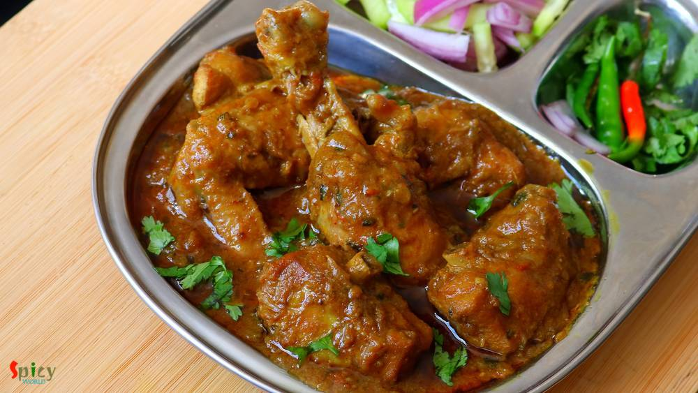
Nonveg Recipe
Jan 29, 2020
I love the buttery aroma of Kasuri Methi (dry fenugreek leaves), it makes almost every curry flavorful. Methi (fenugreek) seeds also has a great aroma but it tastes bitter. If you know how to use it properly then it can make big differences in taste and flavors. I cooked this Chicken Curry yesterday and it was a blast. Kasuri methi Murg Masala goes best with plain roti or rice. Please give it a tr ...

Nonveg Recipe
Jul 22, 2016
During monsoon or winter or whenever you are down with cold and flu, this 'chicken stew' is the perfect dish to bring back the taste of your tastebuds. I am sure lots of Bengalis will relate to this dish. The slight heat from black pepper and saltiness of butter is the main attraction of this item. This stew is very healthy and home style as you can add many veggies of your choice. The recipe is s ...

Veg Recipe
Jul 21, 2016
How many of you guys clean your kitchen pantry often ? Well, I do it once / twice in a year .... very common for a super lazy person ! Last week I found half bag of whole moong daal in my pantry which was sitting behind a pack of pasta without whispering a word. Then I thought why not make a very simple daal like comfort food. Didn't get time to soak the lentils in water, that's why I used pressur ...

Nonveg Recipe
Jul 20, 2016
Pakistani cuisine is full of delicious surprises. Their cuisine is lot more than just kababs and biriyani. I was searching for a different 'goat meat' recipe and suddenly came across with this delicious 'peshawari mutton' recipe. Don't know whether the cooking process is authentic or not, but I really fell for its simplicity. This dish doesn't require too many ingredients even though surprisingly ...

Nonveg Recipe
Jun 13, 2016
Earlier I have shared the recipe of 'Kolhapuri Egg curry', today I am going to share the same recipe, but with chicken and some changes. One of the main ingredient in Maharashtrian cuisine is 'coconut'. We both are not too much coconut eater but when it comes to make authentic dish, I always try to make the taste as close as possible. As this is a 'Kolhapuri' gravy, you have to incorporate coconut ...

Nonveg Recipe
Jul 12, 2016
In USA, every Indian resturant serves 'chicken tikka masala' and it tastes delicious. I never had it in India, don't know why ? Tikka sized grilled chicken, onion and bell peppers are cooked in a tomato based creamy gravy. After tasting this dish several times in restaurants, last month I thought of making it at home. Few months ago I uploaded the recipe of 'chicken tikka kabab', so I am going to ...

Nonveg Recipe
Jul 8, 2016
This particular recipe calls for 'bombay duck fish' / loitta maach, but we couldn't get fresh bombay duck here, that's why I used rohu. 'Macher Jhuri' is nothing but a dry preparation of crumbled / mashed fish, which is typically bengali and goes best with steamed rice. Don't forget to add cubed potatoes because without them this curry will be totally incomplete. Try this easy recipe in your kitch ...

Veg Recipe
Jul 6, 2016
I find this particular recipe of pulao very relaxing and different. 'Achaar' / pickle itself is a very tasty ingredient. With rice and some veggies it creates a very beautiful dish which takes so little time to cook. If you are looking for easy but unique weeknight dinner, then 'Achaari Pulao' along with some raita and salads should be the one for you. This is a very flexible preparation, you can ...

Veg Recipe
Jun 23, 2016
After scorching heat of summer, first few days of monsoon are my favourite. In those days I don't like to stand in front of the gas for long time, because in the meantime you can enjoy the rain by sitting beside the window. I think you guys have already guessed that I am talking about one pot meal - they are so easy to cook. One of the famous one pot meal in Bengal is 'khichuri' / khichdi. I have ...
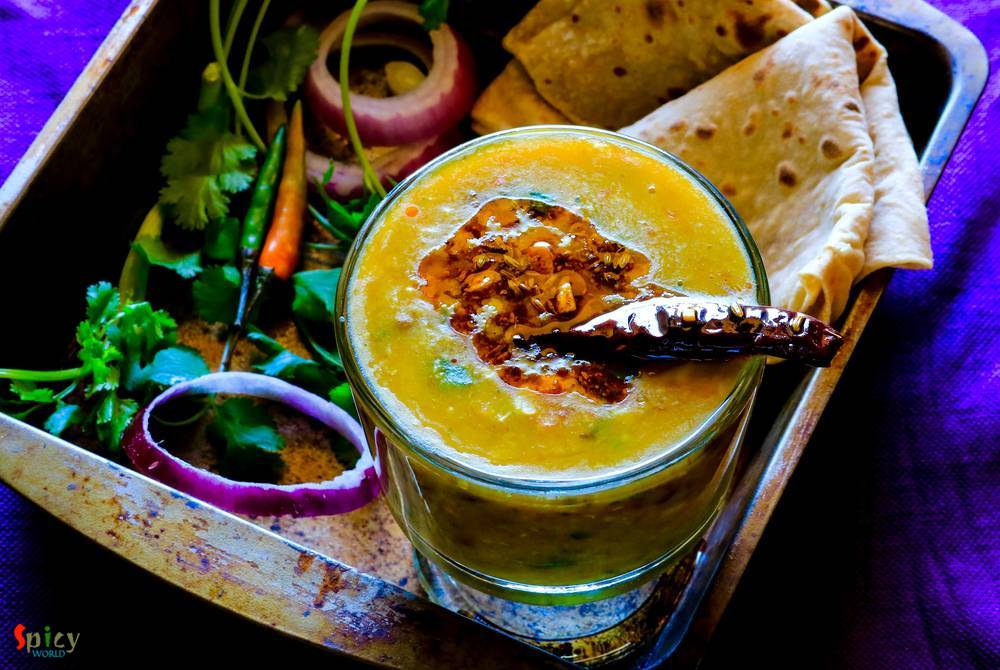
Veg Recipe
Jun 24, 2016
Panchmel Daal is a very healthy and traditional Rajasthani dish, which you can make with five types of lentil - yellow moong, urad, masoor, toor, whole moong / chana daal. This daal is also known as 'panchkuti daal'. This dish is fully packed with protien and nutrition, also it requires very less oil. You can enjoy this delicious, thick consistancy daal with plain roti, bati or rice. Not only the ...

Nonveg Recipe
Jun 22, 2016
'Keema Aloo' is my favourite curry when it comes to a fuss free but yummy dinner. It's so rich and spicy that there is no other meat curry which you can make in such a less time. I used mutton keema but feel free to use chicken mince. After adding the cubed potatoes, this dish becomes a killer ! Serve this with plain rice or paratha, every time 'keema aloo' will be a hit. It is also a very good ma ...

Veg Recipe
Jun 8, 2016
This dish is an indo-chinese item which is very popular and frequently ordered in restaurants of India. Gobi means cauliflower. The recipe is very similar to chicken manchurian (which I have already posted), except the key ingredient here is cauliflower, not chicken. You can make this dish with potatoes, soya granules or raw jackfruit also. Every single time it tastes delicious and goes best with ...

Nonveg Recipe
Jun 6, 2016
Though I ate various types of kabab in India but had no clue about 'chicken shawarma'. I tasted this delicious dish first time in Austin, Texas and now they are available in pretty much all over the world. Shawarma' is a middle eastern kabab preparation which can be made of lamb / chicken / turkey or beef. I had them first time with pilaf and second time with pita bread. My husband and I both fell ...

Veg Recipe
May 19, 2016
If your milk gets curdled, don't throw away, you can do a lot with it. Well, it's bengali style 'chanar kalia' where plain curdled milk / cheese balls are first deep fried and then cooked in a tomato based gravy. It's a vegetarian delicacy of Bengali cuisine. The dish tastes awesome and goes best with plain basmati rice. In any puja or special occasion, we make this dish and it always becomes the ...

Veg Recipe
May 11, 2016
'Pulao' plays a very significant role in Indian cuisine. Our cooking is mostly based upon 'curry' / gravy version which goes best with pulao. Their relationship is like - 'behind every tasty curry, there is a pulao' ... ???? You can never underestimate it because sometimes 'pulao' itself can be very rich and attractive like 'yakhni pulao', 'prawn pulao', 'sweet pulao' and so on. Today I am sharing ...

Nonveg Recipe
May 10, 2016
This chicken curry belongs to the category of 'dhaba food'. The gravy is very popular in Punjab and all over India. You can also make this dish with paneer or vegetables. The white, creamy texture of the gravy and beautiful aroma of fenugreek leaves will take you to heaven. I used boneless chicken for this recipe, feel free to make it with chicken on bone, it will be no issue. You can pair this di ...
 Curry")
Nonveg Recipe
May 2, 2016
There are some recipes which are classics. They don't need any upgradation. 'Kolhapuri Egg Curry' is from this category. This is a famous Maharashtrian dish in which boiled eggs are cooked into the 'kolhapuri' gravy ... it tastes million bucks ! This curry is rich + hot in taste and goes perfectly with steamed rice or plain chapatis. You can keep a large batch of this Kolhapuri masala in fridge fo ...

Nonveg Recipe
Apr 26, 2016
Don't know about you, but I love 'keema' / mince form of meat. I have already posted so many recipes on 'keema' and this time I made paratha with mince chicken. The authentic recipe calls for 'mutton keema' but didn't have it that time, so made it with chicken and the parathas came out perfectly fine. These breads can be enjoyed with pickle, raita or any type of gravy. The recipe is very simple bu ...

Nonveg Recipe
Apr 22, 2016
Are you a garlic loving person ? I am. As chicken is my favourite protien, so I had to combine these two in one dish. 'Lehsuni Murgh' is the perfect dinner choice I made last of last weekend. The dish has very minimum spices with beautiful roasted garlic flavour. This curry can be served with naan, roti or paratha. Recipe is very simple but it tastes heavenly.

Nonveg Recipe
Apr 18, 2016
The name sounds odd ? Well, I am not crazy, we call this mutton curry vegetarian because it has no onion and garlic. The food we usually offer to our god / godess is called 'bhog' which never contains onion and garlic. During 'kalipuja' or diwali, we Bengalis make this vegetarian mutton curry with the meat of 'pathaboli' (ritual). The taste of this curry is suprisingly delicious, even if there is ...

Veg Recipe
Apr 13, 2016
This is a very typical Bengali veg dish which you can only enjoy with steamed rice. We, bongs, have a very strong connection with 'posto' / poppy seeds and 'shorshe' or mustard seeds. We can creat so many delicious items with these two simple things. Now, 'he' is not a fan of eggplant, except fried version, to feed him this particular vegetable is really painful. I always have to make special dish ...
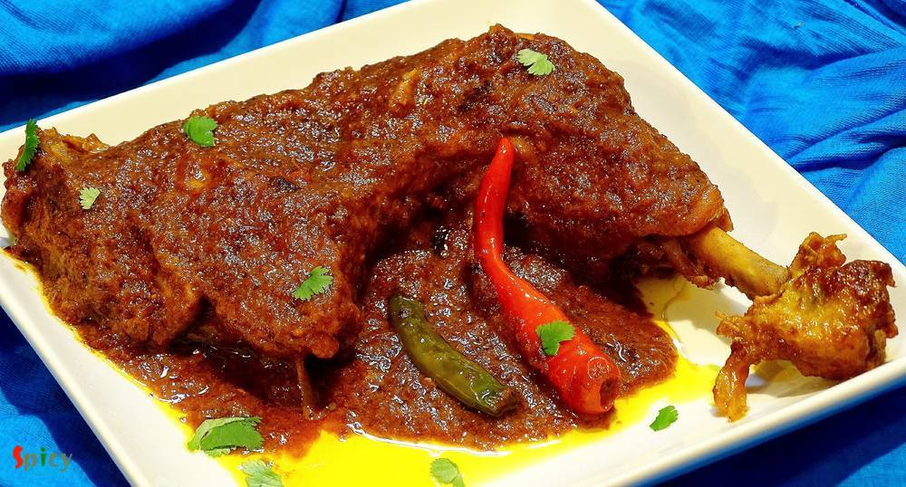
Nonveg Recipe
Apr 11, 2016
Chicken curry is almost regular in my kitchen and that's why I always try to do some twists with the masala, otherwise who will eat same chicken curry regularly? Nobody ! This time I made the twist with dry spices. Generally whole garam masala is used in this type of curry but I decided to go for a change and surprisingly I got the perfect taste. 'Bhuna' means koshano / in low flame you have to co ...

Nonveg Recipe
Apr 5, 2016
I can eat chicken curry in any mood, any day. Chicken was almost regular to our home. My father and I are true chicken lover and that's why my mom used make very plain and simple chicken curry on weekdays. Sometime when she was in hurry, she used to throw everything in a pan and came up with this tasty chicken curry. I also heard that villagers often make this kind of curry which needs no recipe, ...

Nonveg Recipe
Apr 4, 2016
Cooking fried kofta / balls in a rich gravy is an old school Bengali delicacy. I guess everybody loves to eat fried balls made with paneer, vegetables, chicken, fish, mutton etc, but after soaking them in a flavouful gravy they become scrumptious. I had some fish fillets in my fridge and couldn't find any better idea than this to use them. Process of making 'Kofta Curry' is tricky and little bit o ...

Nonveg Recipe
Feb 19, 2016
A good Indian maincourse dish is always paired well with various types of pulao or many types of bread. But sometimes pulao itself can become a very rich and heavy dish. Yes, I am talking about 'mutton pulao'. In this recipe, the rice will be cooked with the tasty mutton stock (yakhni). That is why this type of pulao become rich itself. We both are very much fond of 'yakhni pulao'. You just have t ...

Nonveg Recipe
Mar 31, 2016
In India "biriyani" is a very popular dish and we both are crazy about any type of 'biriyani'. You can find plenty of variations in biriyani. The process is a little bit of lengthy but the result is unbelievable. Last friday I took an attempt on making Keema Biriyani, after the entire process I realized it is the easiest one. That is why I am sharing this recipe with you because it is one of the t ...

Veg Recipe
Mar 30, 2016
I have not grown up too much of eating 'paneer' rather I grew up eating fish, chicken, rice, dal and vegetable dishes. I ate paneer in parties and very few times in restaurants. But after coming to US I learned how to make paneer at home and trust me, those self made soft white cubes gave me immense happiness. So, after that day we both have become paneer lover and have tried several dishes. This ...

Nonveg Recipe
Mar 23, 2016
Whenever I buy different types of sauces from market, can't think anything but Chinese dishes. With few ingredients you can creat such a splendid item. So, last of last weekend I went ahead and made 'chicken manchurian', the more I can say about it's delicious tangy and spicy taste the less it seems. We enjoyed it with some fried rice but you can also serve this with hakka noodles or simple rumali ...
")
Veg Recipe
Mar 21, 2016
I have seen two types of cauliflower's roast curry from childhood, my mom makes the yellow + spicy version and the other one is white + sweet version. Both of them are my favourite but today I am sharing the recipe of second version because I have already shared a similar as 1st one cauliflower curry in my earlier post. So, in Bengal this cauliflower white curry becomes very popular during festiva ...

Nonveg Recipe
Mar 15, 2016
This prawn curry is a family recipe and my mom-in-law is an expert of making it. It's a very common fish curry in Bengali households. We love to eat prawns in many forms, but his favorite is this one. I would suggest you to make this dish with small prawns, you will get much more flavours. First I fried the prawns, potato and cauliflowers, then cook them with gravy. Plain rice will go very well wi ...

Veg Recipe
Mar 17, 2016
The best and most common weeknight's meal is dal and rice. Nobody likes to eat bland dal, everybody needs some zing to their comfort food sometimes. So, 'spicy urad dal' is my new favourite dal with some kick. You can also call this lentil soup 'tarke wali dal', now everyone has their own story of 'tempering'. I have used lots of garlic, fresh curry leaves, cumin and mustard seeds. But you can add ...

Nonveg Recipe
Mar 9, 2016
Ahhh, atlast I got the time to write down this particular. Made this Chicken Pizza two months ago with Makhni gravy, but the recipe is a bit long, so didn't get the time to write in one sitting. Finally I am posting the delicious pizza recipe. The main attraction here is the sauce which is makhni gravy. I know that we all are a big fan of 'murg makhni' or 'paneer makhni', then why not try this sau ...
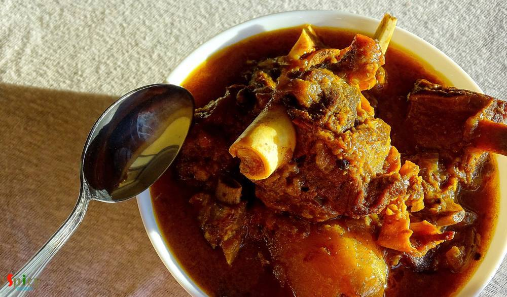
Nonveg Recipe
Mar 4, 2015
Traditional Bengali lunch on sunday is this mutton curry along with plain rice, raw onion chunks and green chilies. After lunch we need a long nap (bhaat ghum). There was a say that we Bengalis can not eat food without potato. This is true. You have to add potatoes to this dish because there are many people like me and my husband who likes potatoes more than mutton pieces specially in this curry. ...

Nonveg Recipe
Mar 3, 2016
We bengalis usually eat 3-4 items with rice in lunch. Yess, its the family tradition in every household in Bengal. Whereas in USA, either it's lunch or dinner, I always make one curry with rice or roti. Sometimes I wonder how our moms, grand mas and mom-in-laws gets time to cook so many items. 'Doi Maach' is an another tasty bengali fish curry which goes very well with steamed rice. It's a classic ...

Nonveg Recipe
Feb 24, 2016
This is my first try on 'Prawn Biriyani' and I pretty much nailed it. I have made this biriyani in classic way, everything is cooked by 'dum' and also in sealed vessel. The taste and aroma was phenomenal. The flavour of fresh shrimps and long grain basmati rice gave this dish a unique taste, very much different from chicken / mutton biriyani. We both enjoyed it with chicken curry. You have to try ...

Veg Recipe
Feb 15, 2016
'Palak paneer' is a famous north indian dish. This is a hit item for spinach lovers. After adding heavy cream the texture will make you greedy. Palak paneer's smooth, rich and velvety gravy is beyond everything. It goes very well with butter naan. It's a no onion and no garlic recipe

Nonveg Recipe
Feb 11, 2016
My husband is a craaaazzyyyyy BiriYani lover. So, I thought what could be more exciting than a biriyani treat to him on V day!!! To cook something special, what he loves, will be the perfect way to express my feelings to him on this perfect day. I researched a lot upon new ideas of biriyani, then my eyes got stuck on Chef Sanjay Thumma's 'ulta biriyani'- how beautiful it is!! I won't say that this ...

Veg Recipe
Feb 8, 2016
I am a big fan of different types of 'pulao'. One of my favorite pulao is 'Jeera Rice' because of it's saltiness and spicyness. It goes very well with many types of veg and non veg curry. The recipe is very simple and easy. You can also give 'jeera rice' in any adult's lunch box with dry curry, every combo will become great. Try this in your kitchen and let me know how it turns out.
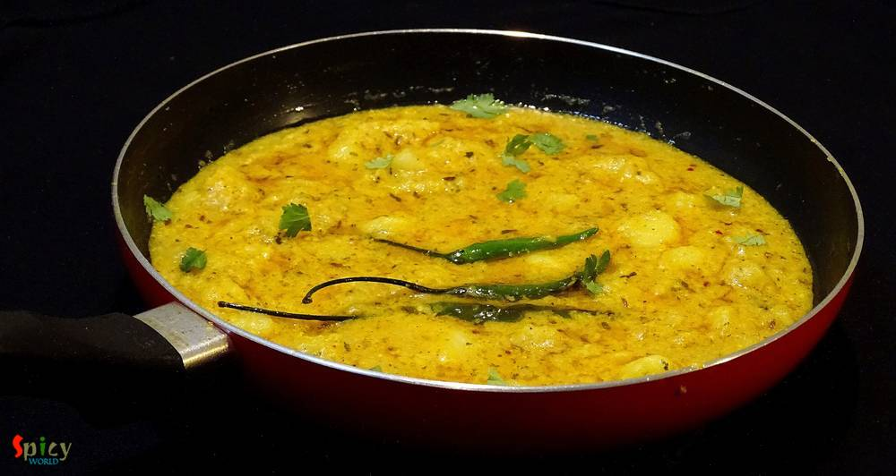
Veg Recipe
Feb 5, 2016
Sometimes, specially in weekdays, I just want to spend very little time in kitchen but also cook some tasty foods. 'Dahi Aloo' is one of the quickest and tastiest maincourse I found out. You have to cook the crumbled and boiled potatoes in a spicy, tangy yogurt sauce. It is that simple, can you imagine ? This is also a no onion and no garlic recipe, best for puja days or 'vrat' days. You can pair ...

Nonveg Recipe
Jan 27, 2016
We both are not frequent egg eaters, but when we do, we try to make the curry yumm yumm !! One of our favourite egg curry is 'sorshe dim posto'- traditional bengali dish. 'Sorshe' means mustard seeds and 'posto' means poppy seeds. Lunch dishes always plays a big part in Bengali cuisine. There are several typically bengali dishes which you can only enjoy as lunch with steamed rice and may be after ...
 / Kosha Mangsho (Thakurbari style)")
Nonveg Recipe
Jan 26, 2016
'Thakurbari' means Rabindranath Tagore's home, which is situated at Jorashanko, Kolkata. Tagore's family is popular for many things and one of them is 'cooking'. Nowadays, you can watch plenty of cooking programmes in TV, but when I was in school, only few magazines used to publish cooking recipes on weekends only. The craze was also different in that time. I still can remember how my mom and gran ...

Nonveg Recipe
Jan 26, 2016
Its winter, the season of colourful veggies... One of my favourite veggie is 'green peas' / Koraishuti. You can make so many items with these tiny green balls like, 'matar paneer', 'peas kachori', 'dum aloo with peas', 'khichdi', 'veg daal', 'cabbage curry with peas' etc. But 'fish curry with green peas paste' may seems new to somebody. Its nothing but a dry fish curry with a tasty extra addition ...
 / Potato and Cauliflower curry / Aloo Fulkopir torkari")
Veg Recipe
Jan 25, 2016
We, nonvegetarian people, generally ordered nonveg dishes while eating at restaurants or dhabas. But we also love to eat home cooked vegetarian meals. In one of our trip to Digha before marriage, we made a stop at the famous 'Sher-e-punjab' for heavy breakfast. We ate there several times before but never did breakfast, so, that was our first time. As it was morning, we orderd veg like 'aloo parath ...

Nonveg Recipe
Jan 20, 2016
Few days before I saw a fantastic picture of mutton curry in facebook. The caption was 'adabata aar kacha lonka diye mutton'. After seeing that picture, I decided to make it on dinner with some steamed rice. As the picture didn't provide the detailed recipe, except ginger and green chilies, I followed my own instinct while making the curry. After finishing, I got a thin, flavorful, tasty gravy and ...

Nonveg Recipe
Jan 19, 2016
As I am Bengali, my favourite fish curry is this one. My husband is also a huge fan of fish and specially this curry. It goes best with hot plain rice. This is a very easy process and the recipe is pretty simple. Try this in your kitchen and let me know how it tastes.

Veg Recipe
Jan 12, 2016
Whenever food has smoked or grilled flavour, there is no second thought about it. Because it has to be tasty. There are so many colorful vegetables available in grocery market during winter. I told you before that my love for winter is only because of food. We can make and also consume without any tension various types of food. Today I am talking about 'eggplant'. Though we both are not big fan of ...

Veg Recipe
Dec 30, 2015
I heard a lot about this dish in past few months and started to research. As I never tasted it before, so I went to an Indian restaurant in Austin named 'Bombay Bistro' and tasted their 'daal bukhara'. Oh my god, it was lip smacking good and then I realized why this dal is so famous. Texture of the dal really impressed me a lot. The authentic recipe is very simple and easy but main trick here is t ...

Nonveg Recipe
Dec 23, 2015
'Dakbanglow' means roadside resting house. Travelers used to take rest or halt for a night in those houses. The care taker of those 'bunglow's cooked this curry for their guests. Nowadays these kind of recipes are almost lost but in a few restaurants in Kolkata you can still find this dish. This is a typical bengali recipe and the tastiest dish ever. Once I ate this curry in my aunt's house and I ...
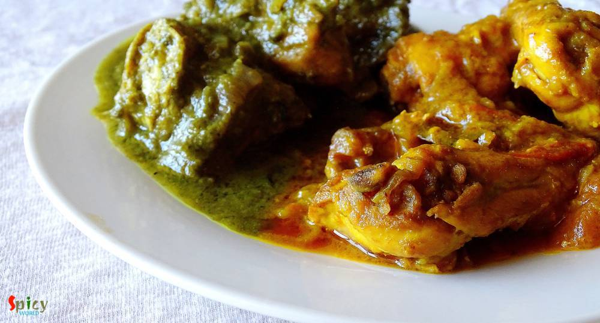
Nonveg Recipe
Dec 18, 2015
First let me thank Disha D'souza for this unique idea. 2-3 weeks ago in a facebook group I saw her unique post and really got inspired. Though I changed the name and recipe little bit (hope she won't mind), but the idea credit must go to Disha. Lots of love and thanks from 'spicy world' to her. Now lets talk about the dish. You can see this is a double colored chicken curry. I also maintain two di ...
 / Kolaier Daal")
Veg Recipe
Dec 15, 2015
Soul food means the food which you can enjoy from the bottom of your heart while eating. Being a bengali I always face a common question- 'fish and posto(poppy seeds) are your soul food, right?'. And my answer is always 'oh, hell yaa' ... ? Today I will talk about vegetarian food. We always make 'biulir daal' / 'urad daal' with posto. The combo is nothing but heavenly. There is a must ingredient ...

Nonveg Recipe
Dec 14, 2015
Whenever 'he' returns from market and gives me a bag of mutton, it always brings an extra big smile on my face and a great joy in my heart. I guess, this happens to many of you also ?. I always try to do something new to my mutton curry, because you all know about my experimental nature!! This time I made 'khara masala mutton', the taste was heavenly. After finishing the meal, there were nothing ...
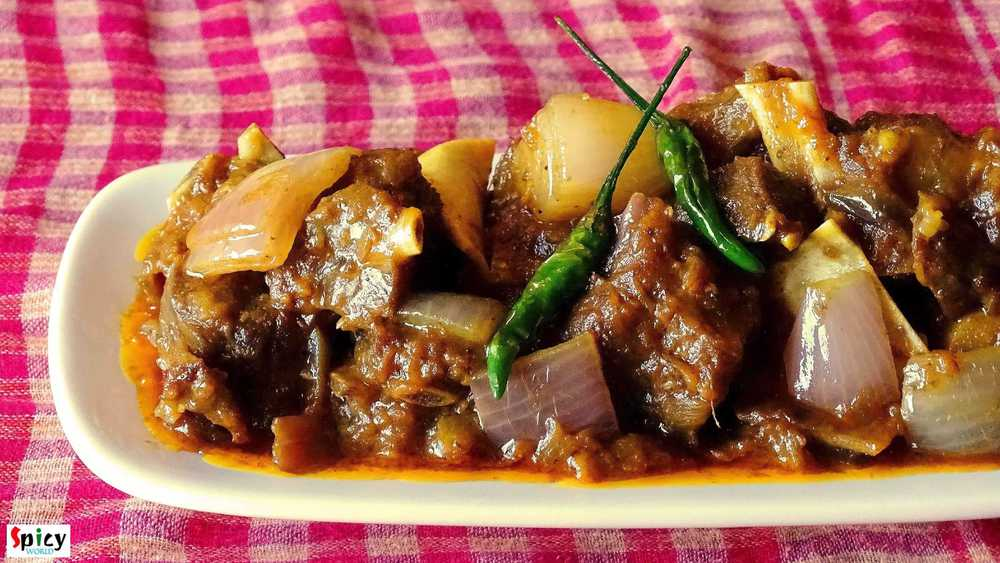
Nonveg Recipe
Dec 13, 2015
In India, 'mutton dopyaza' is a very frequently ordered dish in restaurants. 'Dopyaza' means double amount of onion. From this curry you will get juicy meat, thick gravy and some nice crunch of onions. You can make this curry with chicken and fish also. If you make this dish in any potluck or party, it will become the main attraction. I tried to keep the recipe very simple and easy. Just give it a ...
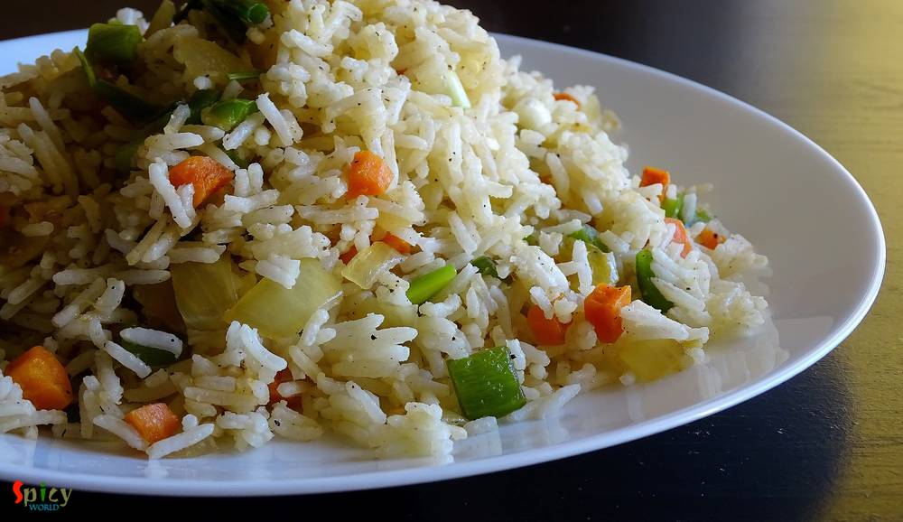
Veg Recipe
Dec 12, 2015
I guess almost everybody love indo-chinese food. The recipe of this fried rice is also indo-chinese and homemade version. I heard from many foodies that in homemade fried rice, there is always lack of that chinese flavour / restaurant flavour. But after following this recipe, you will forget about this complain. You can serve various side dishes with this kind of 'fried rice'. Try this in your kit ...
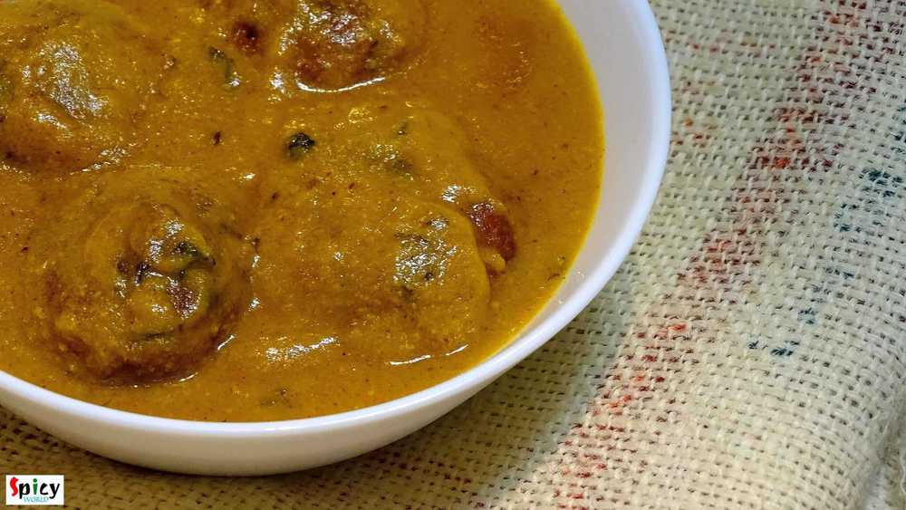
Veg Recipe
Dec 10, 2015
Last weekend I wanted to make something new veg maincourse, thats why I chose this 'paneer kofta curry' and it was just delicious. You can make kofta curry with raw banana, jack fruit, chicken, fish, mutton etc. They all tastes really good. I made it with paneer kofta, you can see how good looking they are and by clicking the picture below you can see how it's prepared. I served this curry with pl ...

Veg Recipe
Dec 7, 2015
'Makhni' is a name of rich, smooth, creamy gravy which is very popular in India. You can make 'chicken makhni', 'paneer makhni', 'kofta curry' and many more dishes with this gravy. I personally love the methi flavour and creaminess about this gravy. We had it in dinner last night with soft butter naans. The combination was heavenly. You just have to try this.

Veg Recipe
Nov 28, 2015
I think almost every Bengali is familiar with this name. I love 'posto' or poppy seeds in any form. I made this dish on yesterday lunch along with some steamed rice. The fresh flavour of mustard oil and poppy seed paste always makes me crazy. I made it in microwave but you can also make this in oven. Try this in your kitchen and let me know how it turns out.

Nonveg Recipe
Nov 26, 2015
Its true that I love eating pasta after coming usa. In India I was more fond of noodles, ramen or maggie. But recently I experimented couple of recipes on pasta and they turned out really well. I love my pasta on spicy side, that's why I mentioned it in the title. After baking with cheese, the taste of this dish became phenomenal. If you do not want to bake or use cheese, then make this dish witho ...
")
Veg Recipe
Nov 25, 2015
I have a friend in New Jersy, Monica, who makes the best chana masala ever. I learned this recipe from her. Since we moved from Jersy I missed her and her cooking very much. This is a punjabi dish, goes very well with bhatura, puri or roti. The recipe is very simple and it tastes delicious.

Nonveg Recipe
Nov 21, 2015
When an inch of oil or ghee floats upon gravy, yes its 'mughlai nawabi dish'. 'Nawab' means king. This category of curries have nice colored, rich, thick, creamy gravy. 'Chicken Korma' is my favourite one. You can easily eat this curry once in a month along with 'biriyani', 'pulaao', 'butter naan' or 'rumali roti'. Do not put this kind of food in your regular diet because you have to make or eat k ...

Nonveg Recipe
Nov 19, 2015
When I was in college, I loved to do some cooking with my mom. 'Dhaniya Chicken' was one of my teenage speciality dish. Dhaniya / dhonepata means coriander leaves. I only prefer to use garlic and don't like to use whole spices for this dish. According to me, the strong aroma of whole spices dominate the flavour of fresh coriander leaves. After a long time, last night I made 'dhonepata chicken' alo ...

Nonveg Recipe
Nov 18, 2015
It is almost impossible to find them who doesn't love chinese food, specially 'hakka noodles'. I think, this is the most frequently ordered dish in any indo-chinese restaurant. I, personally don't like any side dish with hakka noodles because this chinese dish has its own magic. I made this noodles in dinner and the taste turned out exceptionally good, the flavour was same like restaurants. Try th ...
")
Veg Recipe
Nov 17, 2015
Bengali without posto(poppy seed)? - impossible. Bengali without aloo(potato)? - no way. I specially can't live without these two. 'Aloo posto' or 'aloo fulkopi posto' is my favourite weekday's lunch with steamed rice and hot daal. My hubby is very fond of 'fulkopi' (cauliflower), that's why I added this in the gravy. But if you don't like you can totally skip this part. The most simple and easy r ...
")
Veg Recipe
Nov 15, 2015
'Khatta' means tangy/sour and 'baingan' means eggplant/begun. Most probably this dish is from Kashmiri cuisin. I do not have much knowledge about this cuisin but I can assure you that you will never forget this eggplant recipe. Last wednesday we both wanted to eat veg in dinner and I had an eggplant(begun) in my fridge. So, I googled for some spicy veg recipes made with eggplant, and my eyes got s ...
")
Nonveg Recipe
Nov 13, 2015
I always try new recipes on chicken because it is my family's favourite. Last Friday 'he' wanted to eat any dry preparation at dinner and told me 1 and half hour ago from dinner time. As I had not much time in hand, so, I thought how about marinate everything with chicken pieces and cook it. It took very less time and the taste turned out phenomenal. Believe me the end result was beyond my imagina ...
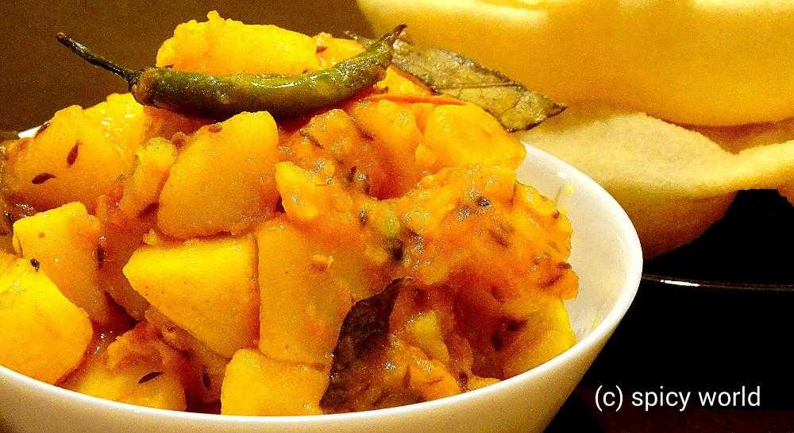
Veg Recipe
Nov 11, 2015
This is a no onion and no garlic recipe. Usually in many 'puja's we make this kind of dishes. 'Potato curry' goes very well with 'luchi', 'paratha', 'kochuri' etc. But last tuesday I tried a new combo with 'bhatura'. Magically we both loved and enjoyed it very much. I learned this potato curry from my mom. She also follow the same recipe for 'niramish aloo dom' and it tastes always good. Try this ...
")
Nonveg Recipe
Nov 9, 2015
This lentil soup is one of the traditional food in Bengal. Last weekend I had two fish heads in my fridge. I am personally not too much fond of plain fish head curry. So, I made this dish and it came out really perfect like 'biyebari'. In most of the bengali wedding this dish is must for lunch and everybody loves it. I ate the home made version of this daal twice from my mom. Those times I really ...
")
Veg Recipe
Nov 8, 2015
'Chola-Bhatura' is a very popular combo in India and also in many other countries. The origin of this dish is from Punjab. But you can get this combo as street food in Delhi and many other parts of India. I ate and learnt homemade 'chola-bhatura' from my friend Monica, when I lived in New Jersy. Her 'bhatura's always came out very flakey and puffed up. There is nothing but 'super tasty' I can say ...

Veg Recipe
Nov 7, 2015
From my childhood, almost in every bengali wedding I have seen the famous combo of 'koraishutir kochuri' and 'kashmiri aloor dom' in the menu card. There is no question about that combo, it tastes heavenly. This dish is no onion and no garlic recipe but the attraction is its nice red color. You will need different types of spice powder for this recipe. I don't know much about kashmiri cuisin, this ...

Nonveg Recipe
Nov 6, 2015
Bengalis make various kinds of fish curry with different types of fishes. The most simple and easy one is 'macher jhol' or fish curry. 'Jhol' means runny version of a curry. This dish is usually served as lunch with steamed rice and we all are fan of it. In 'macher jhol' you can use rohu / katla / tilapia / pomfret / pabda etc. One can add many kinds of vegetables like potato, cauliflower, eggplan ...

Veg Recipe
Nov 5, 2015
Bengalis are always very fond of 'peas kochuri' and 'aloor dom' (Dum Aloo) during winter. In Texas, the temparature starts falling as we approach towards the winter time. I already took out light blankets, full sleeves and light sweters. Last weekend 'he' begged me for 'kochuri-alurdom' and here is the result ... ? I have already posted one recipe of 'aloor dom' which we can make for party or any ...

Nonveg Recipe
Oct 23, 2015
It's always very hard for me to make as usual meal like 'daal, sabji' on weekend. I am sure you will get delicious aroma of spicy dishes from my kitchen almost every weekend. Last weekend 'charcoal' flavour was coming out from a new chicken preparation. Yes, its 'dahi dhuan chicken'. If you like to eat dhaba foods then you will become a fan of this dish. It has a thick rich gravy, nice crunch of o ...

Veg Recipe
Oct 18, 2015
We all love to eat 'aloor dom' along with 'luchi' or 'kochuri'. This is our comfort food. It also goes very well with 'pulao' or 'fried rice'. This one is my mom's recipe. She make the tastiest aloor dom ever. Yesterday I tried this recipe and it came out perfectly.Just give it a try.

Veg Recipe
Oct 4, 2015
This dish dont need any explanation. Because its 'Biriyani'. This is the most popular dish in India. The vegetarian version of biriyani is also very tasty Just give a try and impress your family.

Veg Recipe
Oct 2, 2015
First time I ate this pulao from one of my favourite aunt. She can turn this simple pulao into something special with her love and care. She really has some magic in her hand and I simply love it. In many gatherings you can make this dish and impress your guest.

Veg Recipe
Sep 30, 2015
Though me and my hubby both are nonveg lovers, but we also love spicy veg dishes. 'Kadai Paneer' is our favourite one. Last night my dinner was this paneer dish along with butter naan. There were no other words but 'delicious and mouth watering' about the combination. The main attraction here is KADAI masala. It gives such a nice flavour in this dish. Just close your eyes and go for it.

Nonveg Recipe
Sep 23, 2015
In Bengali's weekdays lunch menu fish has to be there. There is a say 'mache-bhate-bangali' indicates our common meal is fish curry and rice. This is a special dish for party, occasions or gatherings. Macher kaliya goes very well with sweet pulao, fried rice or even plain rice.
")
Nonveg Recipe
Sep 22, 2015
I am an inborn chicken lover. During summer it is not always healthy to eat spicy chicken preparations. For this reason my mom used to make this simple jhol / curry for me. It tastes really good with plain hot rice or plain roti. Give it a try.
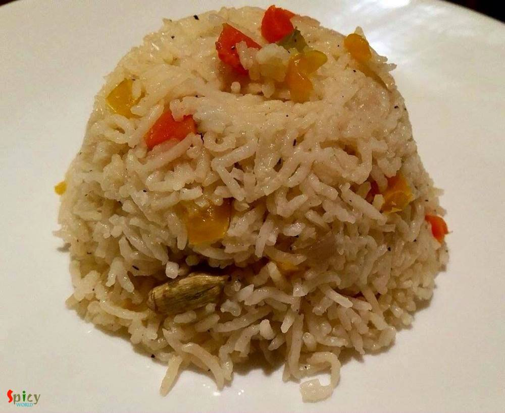
Veg Recipe
Sep 17, 2015
There are many varities of fried rice you can make like 'chinese style', 'indian style', 'fried rice with sauce' etc. This recipe is about indian style. This is a complete meal with vegetables. You can add chicken, egg, prwan, mushroom in this dish. You will love this dish.

Nonveg Recipe
Sep 13, 2015
I got this recipe from one famous cooking channel in youtube. So, let me thank them first. Now the main attraction of this chicken curry is its aroma and simpleness. When I was making it, the aroma from the spices made my husband and me very much impatient. But anyway we had to wait till dinner and enjoyed with hot roti a lot. Make this dish and I am sure it will become your favourite too.
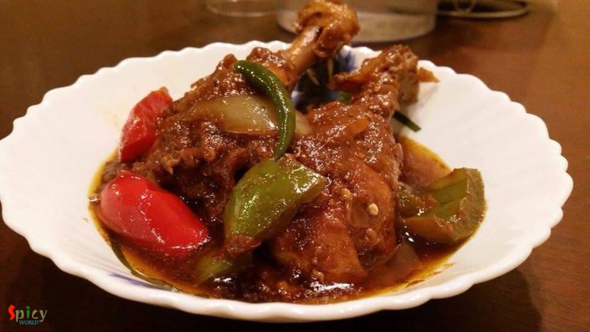
Nonveg Recipe
Sep 11, 2015
Whenever you are unable to think of any maincourse dish for your party, you can blindly rely on this chicken curry. Everyone will like it. This curry has nice aroma of 'kadai masala', little crunch of onion, capsicum and the juicy chicken pieces. Serve this curry with pulao or biriyani, then your party menu will be memorable.